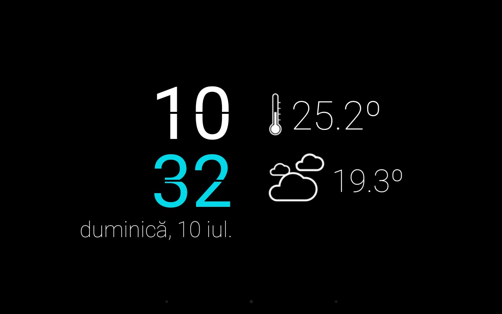
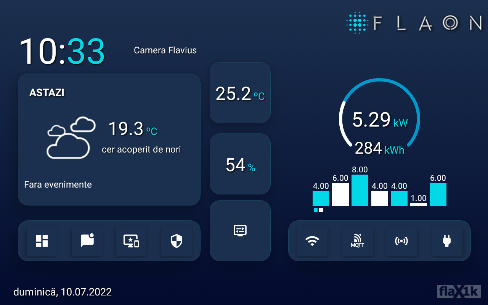
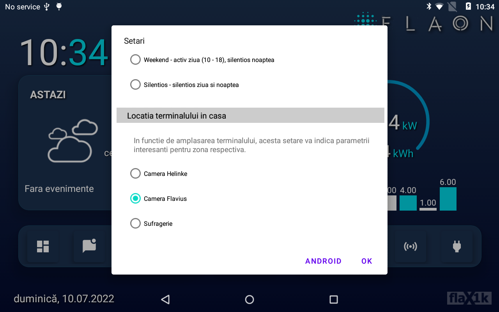

flaON update v23.1
Long time no post in here, so here are the latest updates to flaON project, that now has reached the v23. The biggest change is that now I'm using the OPENHAB gateway instead of Webthings gateway from Mozilla. A few intermediate version for flaON, from v19.1 until v23, versions with different approaches for gateway and core protocols. The latest version (v23.1) of flaON project was released a few days ago with some improvements for remote control, design and functionality.
New screensaver design
This version of flaON android app software comes with a new design for one of the screensavers available, with new color and fonts.

New main screen design & functionality
Somehow obsessed with a simple and clean design, but with all the information in one view, I decided to introduce the energy consumption of the house on the main screen. The tiled style has also been redesigned and rearranged for a new modern look.
For this version of flaON, I used the android's materialcardview and constraintlayout, much more compatible with different resolutions and screens.

Also the fragment and navigation style were used for a much fluid and rapid switch between the different sections of the app.
Still have issues with the erors recording using the RecyclerView.adapter and a class of Messages. This still remains on the TODO list.
Some changes were made to the Settings of the app, accesible now from the flaon logo, changes reflected and recorded in the NodeRED. The settings use the AppCompatDialogFragment and apears as a dialog material.
